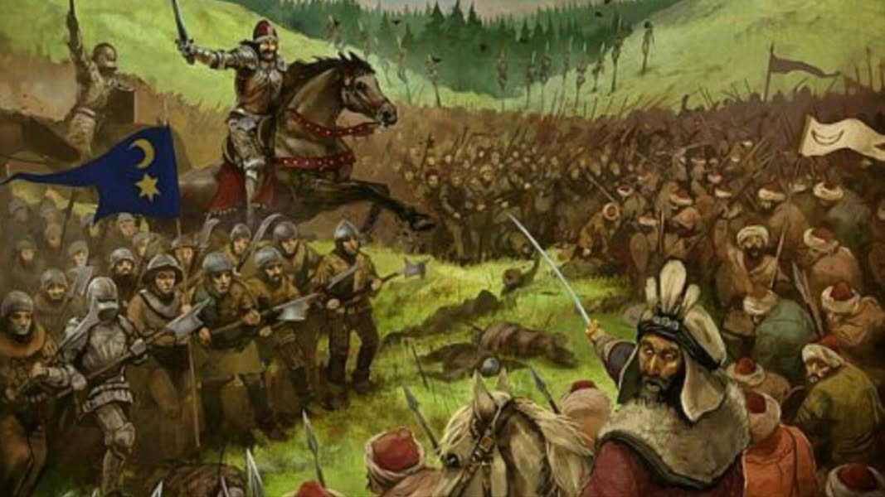

বিভক্তির চোরাবালিতে 'মাজহাবহীন' ঐক্যের স্লোগান
১৫ জুন, ২০২৬
বিভক্তির চোরাবালিতে 'মাজহাবহীন' ঐক্যের স্লোগান—
"ঐক্যের পথে চার মাজহাবই একমাত্র বাধা" কিংবা "উম্মাহর ঐক্য চাইলে মাজহাব ছেড়ে আহলেহাদিস হওয়া ছাড়া বিকল্প নেই"— একসময় এমন চটকদার ও আবেগপ্রবণ স্লোগান দিয়ে সাধারণ মুসলিমদের বিভ্রান্ত করা হয়েছিল। ইসলামের মহান ইমামগণের বিরুদ্ধে সাধারণ মানুষকে খেপিয়ে তুলতে ইতিহাসের আস্তাকুঁড় থেকে খুঁজে বের করা হয়েছিল শত বছরের পুরোনো কিছু বিতর্কিত ও বিরূপ মন্তব্য। উদ্দেশ্য ছিল একটাই—সম্মানিত ইমামদের মর্যাদা ক্ষুণ্ন করা এবং নিজেদের একমাত্র 'সঠিক পথ' হিসেবে জাহির করা।
কিন্তু কালের আবর্তে আজ সত্য উন্মোচিত। তথাকথিত ঐক্যের ডাক দেওয়া সেই 'আহলেহাদিস' মহল আজ নিজেরাই শতধা বিভক্ত। উম্মাহকে ঐক্যবদ্ধ করার ভিশন নিয়ে মাঠে নামা দলটি এখন নিজেদের ভেতরই কাদা ছোড়াছুঁড়িতে লিপ্ত। একজন অন্যজনকে 'বিদআতি', 'খারেজি', কিংবা 'মুরজিয়া' বলে ফতোয়া দিচ্ছে। তাদের এই করুণ দশা দেখে সেই বোকা লোকটির কথাই মনে পড়ে, যে কিনা বৃষ্টির হাত থেকে বাঁচতে গিয়ে অবলীলায় পরনালার (ছাদের পানি পড়ার পাইপ) নিচে গিয়ে আশ্রয় নেয়!
সবচেয়ে বড় আফসোসের বিষয় হলো, পাক-ভারত-উপমহাদেশের এই আহলেহাদিস আন্দোলনের 'মিশন ও ভিশন'-এর সাথে আরব বিশ্বের মূল ধারার আহলেহাদিসদের চিন্তা ও দর্শনের আকাশ-পাতাল তফাত। ঐক্যের ঝান্ডা উড়িয়ে যারা ময়দানে নেমেছিল, আজ তারা নিজেরাই চরম বিভক্তি আর পারস্পরিক কাদা ছোড়াছুঁড়ির এক অন্ধকার গোলকধাঁধায় হারিয়ে গেছে।
বিভক্তির চোরাবালিতে 'মাজহাবহীন' ঐক্যের স্লোগান—
"ঐক্যের পথে চার মাজহাবই একমাত্র বাধা" কিংবা "উম্মাহর ঐক্য চাইলে মাজহাব ছেড়ে আহলেহাদিস হওয়া ছাড়া বিকল্প নেই"— একসময় এমন চটকদার ও আবেগপ্রবণ স্লোগান দিয়ে সাধারণ মুসলিমদের বিভ্রান্ত করা হয়েছিল। ইসলামের মহান ইমামগণের বিরুদ্ধে সাধারণ মানুষকে খেপিয়ে তুলতে ইতিহাসের আস্তাকুঁড় থেকে খুঁজে বের করা হয়েছিল শত বছরের পুরোনো কিছু বিতর্কিত ও বিরূপ মন্তব্য। উদ্দেশ্য ছিল একটাই—সম্মানিত ইমামদের মর্যাদা ক্ষুণ্ন করা এবং নিজেদের একমাত্র 'সঠিক পথ' হিসেবে জাহির করা।
কিন্তু কালের আবর্তে আজ সত্য উন্মোচিত। তথাকথিত ঐক্যের ডাক দেওয়া সেই 'আহলেহাদিস' মহল আজ নিজেরাই শতধা বিভক্ত। উম্মাহকে ঐক্যবদ্ধ করার ভিশন নিয়ে মাঠে নামা দলটি এখন নিজেদের ভেতরই কাদা ছোড়াছুঁড়িতে লিপ্ত। একজন অন্যজনকে 'বিদআতি', 'খারেজি', কিংবা 'মুরজিয়া' বলে ফতোয়া দিচ্ছে। তাদের এই করুণ দশা দেখে সেই বোকা লোকটির কথাই মনে পড়ে, যে কিনা বৃষ্টির হাত থেকে বাঁচতে গিয়ে অবলীলায় পরনালার (ছাদের পানি পড়ার পাইপ) নিচে গিয়ে আশ্রয় নেয়!
সবচেয়ে বড় আফসোসের বিষয় হলো, পাক-ভারত-উপমহাদেশের এই আহলেহাদিস আন্দোলনের 'মিশন ও ভিশন'-এর সাথে আরব বিশ্বের মূল ধারার আহলেহাদিসদের চিন্তা ও দর্শনের আকাশ-পাতাল তফাত। ঐক্যের ঝান্ডা উড়িয়ে যারা ময়দানে নেমেছিল, আজ তারা নিজেরাই চরম বিভক্তি আর পারস্পরিক কাদা ছোড়াছুঁড়ির এক অন্ধকার গোলকধাঁধায় হারিয়ে গেছে।
